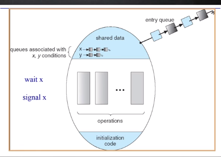

| 创建时间： | 2020/4/12 18:09 |
| 更新时间： | 2020/4/12 18:09 |
| 作者： | lzr |

//条件变量（？）
Class Condition{
int numWaiting = 0;
WaitQueue q;
}
Condition:Wait(lock){
numWaiting ++;
Add this thread t to q;
release(lock);
schedule();//need mutex
require(lock);
}
Condition::Signal(){
if(numWaiting > 0){
Remove a thread t form q;
wakeup(t);//need mutex
numWaiting--;
}
}
class BoundedBuffer{
...
Lock lock;
int count = 0;
Condition notFull,notEmpty;
}
BoundedBuffer::Deposit(c){
lock->Acquire();
if(count==n){
notFull.Wait(&lock);}
Add c to the Buffer;
count++;
notEmpty.Signal();
lock->Release();
BounderBuffer::Remove(c){
lock->Acquire();
if(count==0){
notEmpty.Wait(&lock);}
Remove c from buffer;
count--;
notFull.Signal();
lock->Release();
}